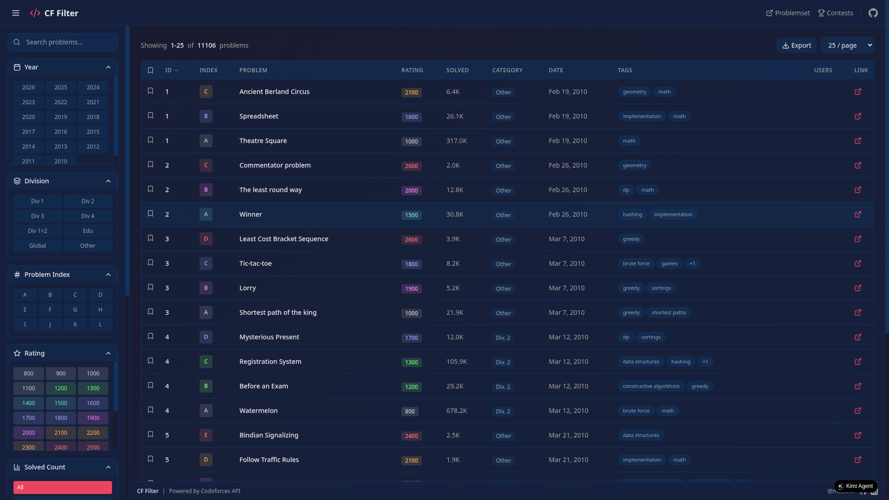
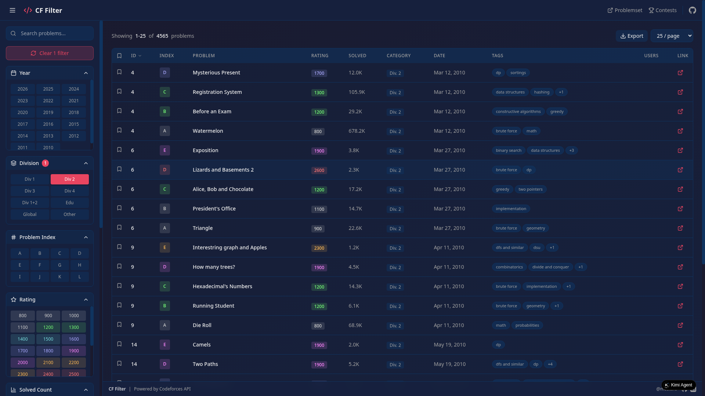

CF Filter
Codeforces Problem Filter

A Professional Tool for Filtering and Exploring Codeforces Problems
Developed by Mostafa Kamal
1. Introduction
1.1 Overview
CF Filter is a professional web application designed for competitive programmers to filter, search, and explore Codeforces problems with advanced filtering capabilities. The application provides a clean, responsive interface with a dark theme optimized for extended use.
1.2 Motivation
Competitive programmers often need to find specific problems based on various criteria such as:
- Problem difficulty (rating)
- Contest division (Div 1, Div 2, Div 3, etc.)
- Problem tags (DP, Graphs, Math, etc.)
- Contest year and date
- Solved count (popularity)
- Problem index (A, B, C, D, etc.)
1.3 Target Audience
- Competitive programmers preparing for contests
- Students learning algorithms and data structures
- Coaches creating problem sets
- Anyone interested in exploring Codeforces problems
2. Features
2.1 Filter Options
Year Filter
Filter problems by contest year (2010-2026). Automatically extracts all available years from the Codeforces problemset.
Division Filter
Filter by contest type: Div 1, Div 2, Div 3, Div 4, Div 1+2, Educational, Global, Other.
Problem Index Filter
Filter problems by their contest index (A, B, C, D, E, F, G, H, I, J, K, L).
Rating Filter
Filter by difficulty rating (800-3500) with color-coded ratings.
Solved Count Filter
Filter by popularity: All, 0-500, 500-1K, 1K-5K, 5K-10K, 10K-50K, 50K+
Status Filter
Filter based on tracked user submissions: All, Solved, Unsolved.
2.2 Rating Color Coding
| Color |
Rating Range |
| Gray | < 1200 |
| Green | 1200 - 1399 |
| Cyan | 1400 - 1599 |
| Blue | 1600 - 1899 |
| Violet | 1900 - 2099 |
| Orange | 2100 - 2399 |
| Red | ≥ 2400 |
2.3 Problem Display
Each problem is displayed with:
- ID - Contest ID
- Index - Problem index (A, B, C, etc.)
- Problem Name - Full problem title
- Rating - Difficulty rating with color coding
- Solved Count - Number of users who solved the problem
- Category - Contest division type (Div. 2, Educational, etc.)
- Date - Contest date
- Tags - Associated algorithm tags
- Users - Tracked users who solved the problem
- Link - Direct link to Codeforces problem
2.4 Additional Features
- Search - Search problems by name, ID, or contest ID
- Sorting - Sort by ID, rating, solved count, or name
- Pagination - Customizable page sizes (5-100)
- Export to CSV - Export filtered problems
- Bookmarking - Save problems for quick access
- Filter Persistence - Filters saved to localStorage
- Adjustable Sidebar - Resize and collapse sidebar
- User Tracking - Track up to 7 users with unique colors
3. Screenshots
Figure 1: Main Dashboard - Full View with Sidebar

Figure 2: Filtered View - Div 2 Problems Only
4. Technical Implementation
4.1 Technology Stack
| Component |
Technology |
| Framework | Next.js 14 (React 18) |
| Language | TypeScript |
| Styling | Tailwind CSS 3.4 |
| Icons | Lucide React |
| HTTP Client | Axios |
| Deployment | Static Export |
4.2 API Integration
The application uses the official Codeforces API:
problemset.problems - Fetch all problems and statisticscontest.list - Fetch contest informationuser.status - Fetch user submissions
4.3 Responsive Design
The application is fully responsive with:
- Desktop - Full sidebar with all features
- Tablet - Collapsible sidebar
- Mobile - Optimized table view with hidden columns
5. Bug Fixes and Improvements
5.1 Fixed Issues
- Filter Persistence - Filters now persist after page refresh using localStorage
- Division Filters - Fixed Educational, Global, and Other division filters
- Sidebar Toggle - Sidebar toggle button now appears at top when collapsed
- Solved Count Filter - Changed to multiples of 500 for better granularity
- Statistics Panel - Removed unnecessary statistics panel
5.2 New Features Added
- Contest Date Display - Added date column for each problem
- Category Column - Shows contest division type (Div. 2, Educational, etc.)
- Adjustable Sidebar - Users can resize sidebar width (200px - 500px)
- Smooth UI/UX - Added transitions and hover effects
- Export Functionality - Export filtered problems to CSV
6. Future Enhancements
6.1 Planned Features
- Problem Recommendations based on user history
- Virtual Contest Mode
- Problem Notes
- Contest Calendar
- User Statistics with detailed analytics
- Problem Difficulty Graph
- Tag Cloud visualization
7. Conclusion
CF Filter provides a professional, feature-rich interface for exploring Codeforces problems. With its comprehensive filtering options, user tracking capabilities, and responsive design, it serves as an essential tool for competitive programmers.
Key Achievements
- Successfully implemented all requested filtering options
- Fixed Educational, Global, and Other division filters
- Added contest date and category display for each problem
- Implemented filter persistence using localStorage
- Created adjustable and collapsible sidebar
- Improved UI/UX with smooth transitions and responsive design
- Added bookmarking and export functionality